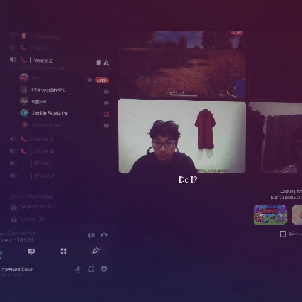

Programmer
Danish
Admin & Integrator
- Mengurus integrasi Google API
- Ngurus perizinan dan administrasi
- Koordinasi & deployment

Syauqi
AI & Database Engineer
- Merancang dan mengelola database
- Membangun Engine Judol Comment Getter
- Training AI untuk mendeteksi dan mengambil komentar judol
- Mendesain tampilan Website
Adzi
Backend & OAuth
- Membangun Engine OAuth2
- Integrasi dengan Youtube API
- Mengembangkan main backend process
- Mendesain tampilan Website